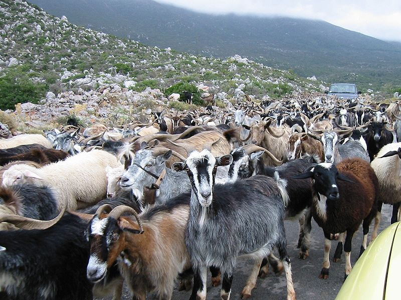

La viande de chèvre provient de la chèvre domestique Capra aegagrus hircus ou sauvage Capra aegagrus aegagrus.
Dans de nombreux pays, l'élevage caprin est majoritairement orienté vers la production de viande, bien que celui-ci soit d'un faible rendement, avec 4 à 7 kg de viande par animal.
C'est le cas en 2000 de la Chine, de la Grèce, et de plusieurs pays d'Asie ou d'Afrique car la viande de chèvre y fait partie, à part entière, de l'alimentation carnée.
D'après quelques éleveurs américains, la viande de chèvre représenterait près de 63 % de la viande rouge consommée au monde.
Toutefois, selon la FAO cette consommation de viande se classe loin derrière celles, dans l'ordre, de porc, de volaille ou de bœuf.
L'élevage caprin boucher est comparable à celui des ovins de boucherie.
Dans certains pays d'Asie et d'Afrique, les caprins, jeunes ou matures, sont une source principale de viande, très appréciée notamment, avec celle de mouton, par les peuples de religion musulmane.
La viande de chevreau est prisée des Juifs ; en Asie, la viande de chèvre est très utilisée particulièrement en Chine et en Corée et dans les Caraïbes, surtout en Guadeloupe et en Haïti.
Dans les pays occidentaux où les animaux adultes ne sont pas recherchés de la même façon, et notamment en Europe où la production de cette viande reste marginale, l'élevage concerne essentiellement la production de jeunes sujets, les chevreaux, chèvres juvéniles sous-produits de l'élevage laitier.
Cependant, chez les Grecs, la viande de chèvre est particulièrement présente durant les fêtes de Pâques et de Noël.
Il existe également ce que l'on appelle le chevreau lourd. Le syndicat caprin de la Drôme a annoncé en 2018 travailler en la création d'un label rouge

|
 |